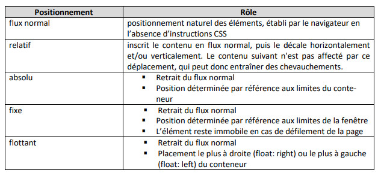
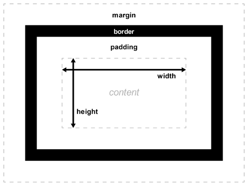

C.S.S.
Cascading Style Sheet
Feuilles de styles en cascade
C.S.S.
- CSS : spécifications du W3C
- C.S.S. 1 = 1996
- C.S.S. 3 = 2002 (officiel en 2011)
- C.S.S. 4 : statut "brouillon", sortie ???
A quoi ça sert ?
- Le CSS permet d'appliquer des styles sur vos éléments HTML
- Les styles permettent d'influer sur l'aspect graphique des éléments
- Modifier le positionnement, les polices, les couleurs, les dimensions...
- Fichier avec l'extension
.css
Exemples
Syntaxe
- Sélecteur + bloc d'instructions entre accolades :
#contenu
{
color: #000000;
width: 200px;
}
- instruction : valeur;
- instructions (lignes) séparées par point-virgule
Syntaxe
Commentaires :
/* Ceci est une ligne de commentaires en CSS */
#contenu
{
width: 200px;
}
/* Ceci est un bloc de commentaires en CSS
#contenu
{
width: 200px;
}
*/
Propriétés
#contenu
{
background-color: yellow;
border: 5px solid #FF0080;
color: #000000;
font: 25pt 'Courier New';
height: 500px;
text-align: center;
width: 50%;
}
Sélecteurs
- Le sélecteur permet de choisir les balises qui seront affectées par les propriétés
- Nom de la balise :
a { color: green; } - ID de la balise :
#contenu { text-align: center; } - Classe de la balise
.contour_rouge { border: 2px solid #FF0000; } - Exemple
Intégration
Par ordre de priorité :
- Sur la balise HTML avec l'attribut
style - Dans la page HTML : balise
<style>, de préférence dans<head> - Dans un fichier .css externe : balise
<link>dans<head>= PRATIQUE RECOMMANDEE - Appel de plusieurs fichiers externes possibles
- Exemple
Concept de cascade
- Cascade = ordre de priorité sur les fichiers et paramétrages
- Navigateur > Utilisateur > Différents fichiers CSS (externes > head > attribut de balise HTML)
- A retenir : dernière instruction appliquée = la plus proche de la balise HTML
Concept d'héritage
- Héritage = ordre de priorité des instructions
- Exemple
Flux
- Flux "normal" (ou "naturel") : les éléments HTML se positionnent selon un ordre selon leur type bloc/en ligne.
- La propriété
displayva permettre d'inverser le type normal de la balise. - Exemple
Positionnement
5 types de positionnement
Modèles de boîte
Modèles de boîte
margin: marge extérieure
: bordureborder
: espacement intérieurpadding
etwidth
: largeur et hauteur (dimensions)height
Problèmes courants
- La cascade et l'héritage : bien maîtriser les règles
- Modèle de boîte : dépassement (
overflow) - Compatibilité navigateurs
Fonctionnalités avancées
Outils
- S'assurer de la compatibilité navigateur (exemple)
- Inspecteur de code des navigateurs (
F12) - Validateur de code W3C